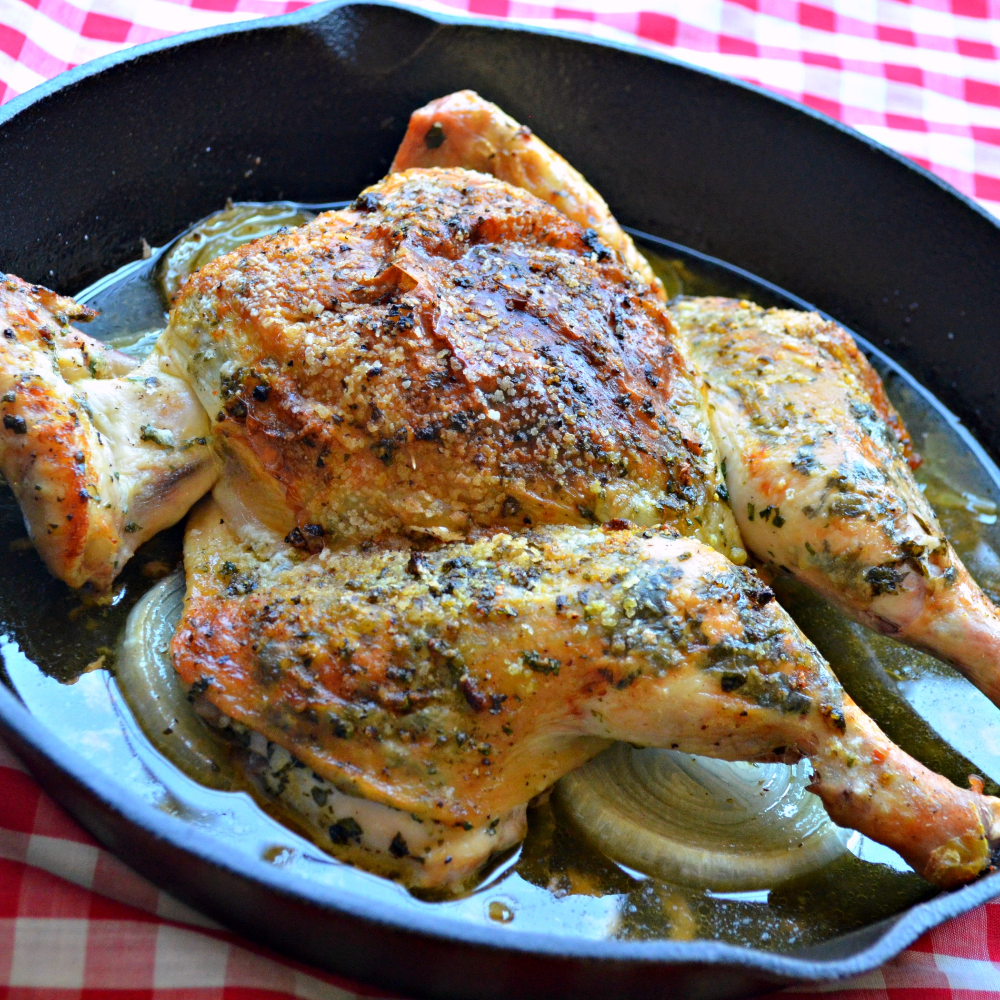

Chimichurri Baked Chicken

Description
Chimichurri is a dish from Argentina that is usually served over grilled chicken or steak.
Ingredients
- ½ cup finely chopped fresh parsley
- 2 ½ tablespoons olive oil
- 2 tablespoons chopped fresh oregano leaves
- 1 tablespoon red wine vinegar
- 2 cloves garlic, minced
Steps
- Combine parsley, 2 1/2 tablespoons olive oil, oregano, vinegar, garlic, salt, red pepper flakes, and black pepper in a bowl; mix the chimichurri thoroughly.
- Place chicken on a cutting board and remove the backbone using kitchen shears. Press down on the breast with the heel of your hand to flatten.
- Allow chicken to come to room temperature for no more than 1 hour before baking.
- Preheat oven to 450 degrees F (230 degrees C).
- Rub 1 teaspoon olive oil over the chicken; season with salt and pepper. Place onion in a cast-iron skillet. Pour chicken broth over onion. Place seasoned chicken on top.